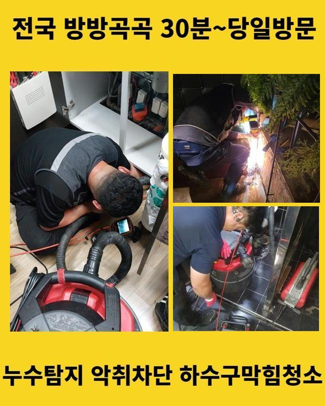
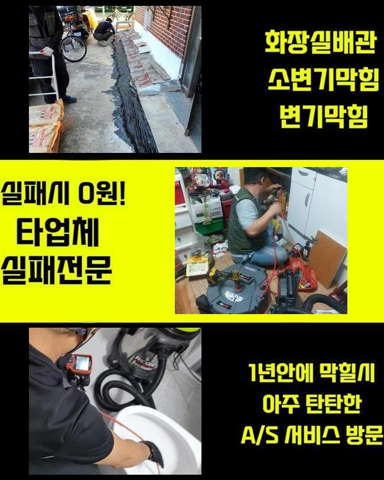
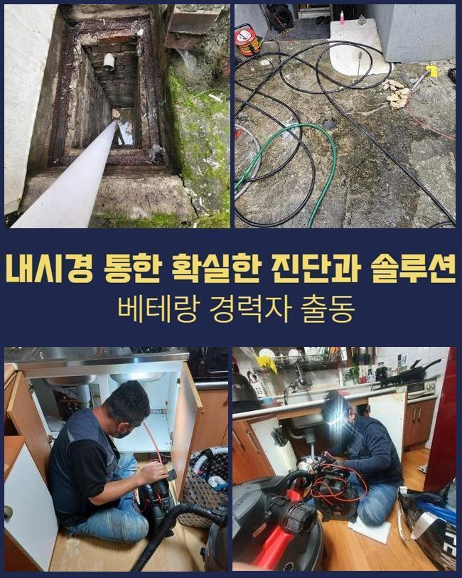
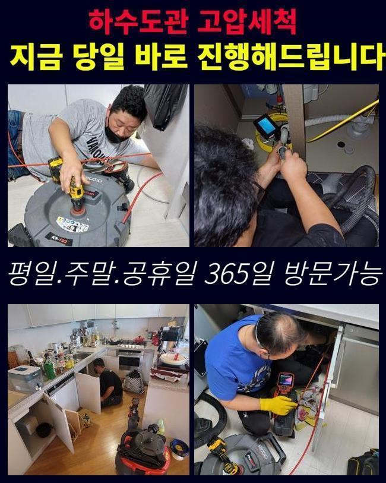
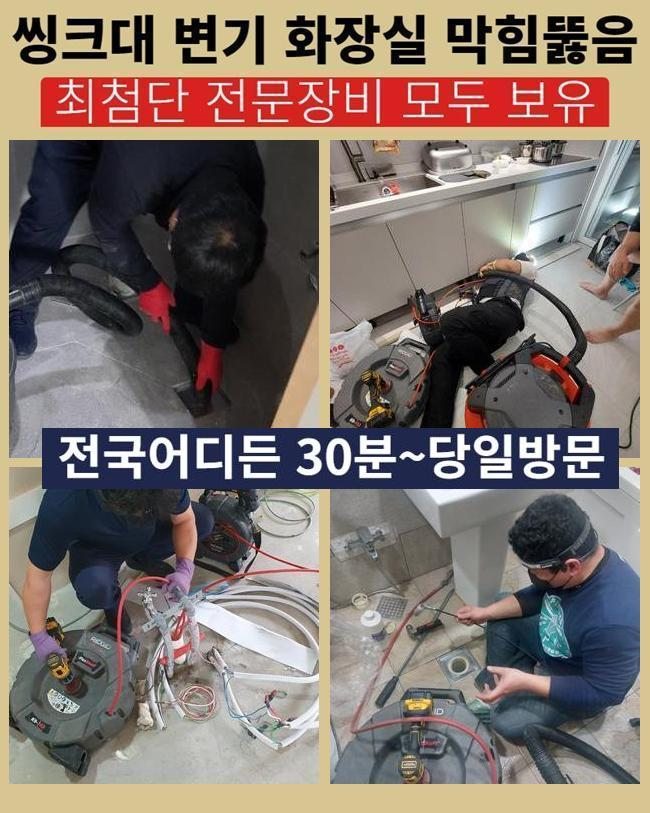
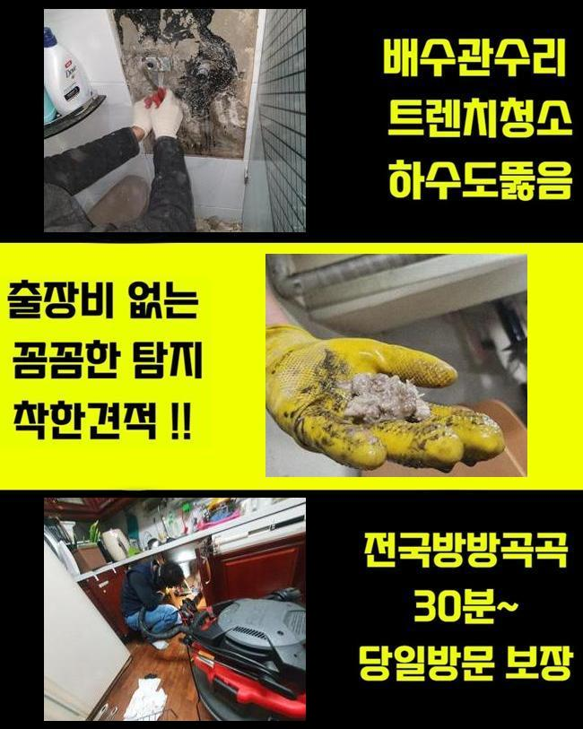
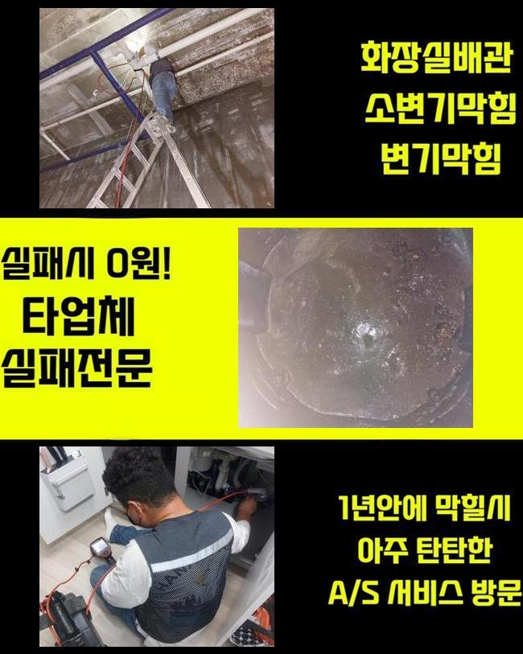

🏠 광주 회덕동하수구막힘 곤지암읍 배관뚫기 통수전문
광주 회덕동 하수구막힘 전문 시공 후기

📋 작업 개요
- 위치: 광주 회덕동, 회덕동, 광주
- 서비스 유형: 하수구막힘, 배관막힘, 집수정막힘, 역류해결, 뚫는업체, 배관청소, 설비공사
- 작업 일시: 2025. 1. 23. 22:09
- 업체명: 하수구수사대 (010-5615-2118)
🔍 문제 상황
광주 회덕동하수구막힘 곤지암읍 배관뚫기 통수전문
여러 가구가 모여있는 주택 내부 하수설비를 관리하지 않는 경우 침전물이 쌓이면서 배수라인의 이상이 나타날 가능성이 높아집니다
사용하고 계시는 하수시설의 연식이 많이 되었다면 주기를 정해두시고 업체에 요청하셔서 배수구의 컨디션을 확인해봐야 해요
이번에 출동한 현장은 의뢰인께서 하수라인이 막힌건지 물이 내려가질 않는다고 전화를 해주셨어요
출동해보니 마을과 거리가 꽤 되는 외진 곳의 주택이였고 주변에 캠핑시설이 위치해있는 상황이였습니다
집을 지은지 오래되지 않은 새집인데 외부로 역류문제가 자주 보인다고 하셨어요
확인해본 결과로는 창고에 설치 되어있는 집수정쪽에서 바깥에 있는 정화조로 유입시키는 상황이였어요
정화조 거리가 너무 멀어서 창고에 설치하는게 가장 낫다고 하셨대요
고객님께 막힌부위를 찾아내도 점검구가 보이지 않는다면 생각보다 작업이 길어질 수 있다고 설명을 드렸고 동의를 해주셨습니다
집수정에서 내시경기를 넣었으나 오염물질이 많아서 정화조쪽으로 라인을 넣을 수가 없었습니다

🔎 원인 분석
💡 전문가 진단: 정밀 진단 장비를 사용하여 슬러지의 고착 여부를 판명하고 타격/세척 작업을 실시했습니다.
이물질이 가득하게 차있는걸 고객님께도 보여드리며 설명 해드렸어요
샤프트기계로 수리를 진행했습니다
기기에 머리카락과 물티슈가 끝도없이 엉켜서 빠져나왔어요
다세대주택의 역류문제의 이유들은 머리카락과 물티슈가 흔합니다
의뢰인님께 이러한 이물질은 분리하여 배출하시라고 설명드렸어요
물티슈같은 것은 화학적인 성분으로 종이재질이 아니라 플라스틱 성질이므로 물에 녹지 않아요
요새 물에 녹는 물티슈도 있다고는 하지만 그것 또한 뭉쳐서 사용하면 배수구가 막히면서 결국엔 역류하는 상황이 발생합니다
하수관 내부에 있는 불순물과 같이 덩어리지면서 막힘사고를 유발합니다
사용시 주의하여 물티슈와 작은 쓰레기 등은 분리배출 하셔야 해요!
배수라인은 하수를 처리하는 곳인걸 기억하셔서 오염물질은 분리배출을 원칙으로 하시길 바랍니다

🔧 작업 과정
이후엔 창고쪽으로 가서 내시경장비를 투입합니다
배수관이 길어서 내시경기기로 마지막 부분까지 들어가는게 불가하여 쏜드기를 투입했습니다
막힌 부분쪽에 반복적으로 노폐물 제거과정을 이어나갔어요
앞전 상황과 똑같이 물티슈와 엉킨 이물질들이 한가득 엉겨서 나오는걸 보시고나서 의뢰인분께서도 작은 일이 아니라는 것을 인지하신 것 같았어요
저희 전문진에게 이와같은 막힘사고가 반복되지 않게 주의사항을 알려달라고 말씀하셔서 꼼꼼하게 답변 해드렸습니다
보통 사용하시면서 작은 쓰레기 같은건 흘러가면 자연스레 물과 함께 배출된다고 알고 계시지만 구배상 환경요건이 좋지 않은 경우에 안쪽에 불순물도 생기기때문에 작은 쓰레기나 조리시에 발생하는 기름들을 그냥 버리면 문제가 생깁니다
내시경기기를 활용해서 오염물질이 깨끗하게 나왔는지 다시 한번 살펴보았습니다
정화조가 위치한 쪽의 배관과 집수정쪽의 배관까지 양쪽에서 체크를 하였고 남아있는 불순물 없이 깨끗해진 배수관이 확인되어 작업을 마무리 했습니다
고객분에게도 보여드렸더니 안심 되신다고 하셨어요
사용을 하시다가 문제가 생겼을때 독한 약품을 사용하면 어렵지 않게 막힌걸 내려보낸다고 알고있는 분들도 있지만 그건 매우 위험합니다
사례자님께서 이용을 하시면서 찌꺼기를 흘려보내지 말고 다세대주택의 사용기간이 오래 된 경우라면 사전에 전문 기술진에게 의뢰하여 예방하는 차원에서 검진을 진행하셔야 해요
작은 문제들을 그냥 두시면 막힘문제가 발생하여 큰공사를 진행하게 되어 금액적으로 부담감이 상승하게 됩니다
어떤일도 마차가지로 하수설비의 이상을 작은 문제로 여기시면 금액적인 의뢰인께서 책임져야 하는 부분이 커지는 것을 알고 계셔야 합니다
모든 작업을 종료하고 주변의 오염을 정리하고 청소 해드렸어요
오래된 이물질들로 지독한 냄새가 나서 전용세제를 뿌려두고 수전에 연결하여 전체적으로 청소했습니다
원래는 이러한 오염물질까지 저희 전문가들이 특수청소하는 일은 없었습니다


✅ 작업 완료
이번에 작업한 현장은 오염의 정도가 심해도 너무 심해서 지나칠 수가 없었습니다
저희는 하수관의 물티슈는 당연하고 하수시설 안의 침전물을 제거하고 하수의 흐름 방향이 제대로 되는 상황까지 마무리 점검을 반드시 합니다
의뢰인분께서 저희 전문 기술진을 믿어주시길 바라며 이와 비슷한 경우로 자세하게 상담 받고자 하시다면 편하게 문의 주시기 바랍니다
하수시설의 문제점을 조금 더 나은 방법들로 처리하고자 하신다면 신속함이 베스트라는 것을 잊지말고 미리 예방하셔야 해요
일상에서 이러한 하수설비의 이상문제가 안생기면 좋겠지만서도 혹시라고 일어났다면 긴급하게 전문 기술진에게 의뢰를 하시기 바랍니다




⚠️ 하수구 배관 막힘 예방 및 관리 가이드
- ✅ 머리카락, 비닐, 물티슈 등 물에 분해되지 않는 이물질은 하수구 유입을 절대 금지해 주세요.
- ✅ 하수구 거름망을 씌우고 모여진 이물질은 주기적으로 쓰레기통에 바로 비워주셔야 합니다.
- ✅ 배관 노후가 심할 경우 이물질이 더 쉽게 걸리므로 주기적인 배관 세척(고압세척 등)을 권장합니다.
- ✅ 작업 후 1년 이내 재발 시 하수구수사대에서 무상 A/S 보증 서비스를 제공합니다.
💡 핵심 정리
- 확실한 장비 작업(내시경 점검 및 샤프트 스케일링)으로 원인을 뿌리 뽑습니다.
- 작업 후 1년 이내에 동일한 부위 재발 시 100% 무상 A/S 서비스를 보장합니다.
- 서울 · 경기 · 인천 전 지역에 24시간 언제든 긴급 출동할 수 있도록 항시 대기 중입니다.
❓ 자주 묻는 질문 (FAQ)
🚨 광주 회덕동 하수구막힘 문제로 고민이신가요?
정확한 원인 진단과 확실한 시공으로 재발 없는 해결을 약속드립니다.
24시간 긴급 출동 | 서울 · 경기 · 인천 전지역 | 1년 내 재발 시 무상 A/S